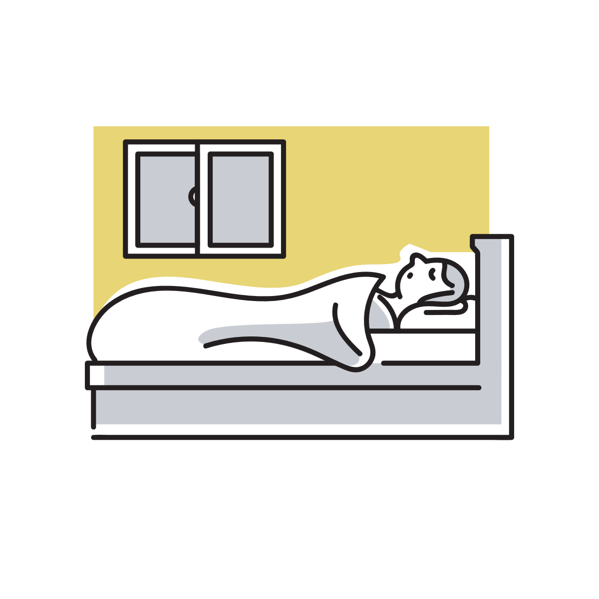

横向きに寝るとなぜ手を足の間に挟みたくなるのか
横向きで寝ていると、無意識に手を足の間へ入れてしまうことがあります。 一見すると不思議な癖にも見えますが、実際には体の安定や圧迫感の調整、安心感などが関係していると考えられています。
横向き寝は意外とバランスを取り続けている
仰向けと違い、横向き寝は体の左右どちらかへ重さが偏っています。
そのため、肩や骨盤、膝などには部分的な圧力がかかりやすく、完全に脱力しているようでも、体は細かくバランスを調整しています。
特に足を重ねた状態では、上側の脚の重みが下側へ乗りやすくなります。
そこで手を足の間へ入れることで、脚同士が直接ぶつかる圧迫感を減らし、姿勢を安定させやすくなることがあります。
つまりこの動作は、「変な癖」というより、体が自然に楽な位置を探した結果とも考えられます。
足の間に何かあると楽に感じやすい理由
横向き寝では、膝同士や太もも同士が重なります。
骨ばった部分が直接当たり続けると、わずかな圧迫感や違和感が生まれることがあります。
そこへ手を入れると、クッションのような役割になり、接触の強さが少し和らぎます。
抱き枕を脚で挟むと楽に感じる人がいるのも、これに近い仕組みです。
骨盤や腰のねじれを減らしやすい
横向き寝では、上側の脚が前へ落ちやすく、骨盤が軽くねじれることがあります。
その状態が続くと、腰まわりへ負担感が出る人もいます。
手やクッションを脚の間へ入れることで、脚の位置が安定し、骨盤の傾きが緩和されやすくなる場合があります。
もちろん大きな矯正効果があるわけではありませんが、体が「この方が楽だ」と感じている可能性はあります。

「包まれている感覚」を作っている面もある
人は眠るとき、完全に無防備になるわけではありません。
布団を抱えたり、毛布を巻き込んだり、小さく丸まった姿勢になる人がいるのも、体が安心しやすい形を自然に選んでいるためと考えられています。
手を足の間へ入れる動作にも、こうした「体の境界を感じやすくする働き」が含まれている可能性があります。
特に横向き寝は丸まる姿勢になりやすいため、自分の体へ軽く触れている状態が安心感につながることがあります。
安心感と寝姿勢は意外と結びついている
寝る前は、筋肉の緊張や体温、周囲の環境などに体が細かく反応しています。
そのため、「なぜかわからないけどこの姿勢が落ち着く」という感覚は珍しいことではありません。
冷えや温度感覚が関係していることもある
手を足の間へ入れると、暖かく感じることがあります。
太ももの内側付近は比較的熱がこもりやすいため、冷えた手を温める場所として無意識に選ばれている可能性があります。
特に冬場や、寝入りばなの体温調整が不安定なタイミングでは、この姿勢が増える人もいます。
逆に暑い時期には、足の間へ何も挟まない方が快適に感じることもあります。
つまりこの動作は、筋肉や姿勢だけでなく、温度感覚とも関係している場合があります。
寝る姿勢には思っている以上に個性がある
横向きで丸まる人もいれば、手を上へ伸ばす人、毛布を抱える人、脚を大きく曲げる人もいます。
これは性格診断のように単純に分類できるものではなく、「どの姿勢だと体が落ち着きやすいか」の違いに近いものです。
特に眠る前は、筋肉の緊張や体温、安心感などが細かく影響しています。
だからこそ、「なぜかわからないけどこの姿勢になる」という感覚は珍しいことではありません。
手を足の間へ挟む動作も、体が眠りやすい状態を探した結果として自然に現れているのかもしれません。
参考情報と注意点
寝姿勢の快適さには個人差があります。痛みやしびれが続く場合は、寝具や体勢だけでなく医療的な要因も考慮してください。
関連アイテム
 | 価格:9900円 |